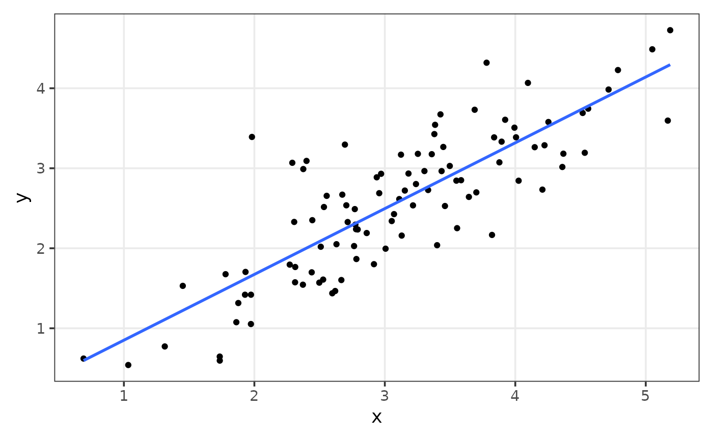

Other functions
other_functions.Rmdcut_by_quantile
The goal of cut_by_quantile is to divide a numeric
variable by a set of quantiles.
set.seed(123);x <- rnorm(100)
quartiles <- seq(0,1,by = .25)
table(cut_by_quantile(x,q = quartiles))
#>
#> [-2.31,-0.494] (-0.494,0.0618] (0.0618,0.692] (0.692,2.19]
#> 25 25 25 25expand_grid_unique
The goal of expand_grid_unique is to create a grid of
all combination from two variables, with no repetition of pairs, not
matter the position.
expand_grid_unique(x = 1:3,y = 1:3)
#> # A tibble: 3 × 2
#> V1 V2
#> <int> <int>
#> 1 1 2
#> 2 1 3
#> 3 2 3You can also set the argument include_equals to
TRUE, so equal pairs are kept.
expand_grid_unique(x = 1:3,y = 1:3, include_equals = TRUE)
#> # A tibble: 6 × 2
#> V1 V2
#> <int> <int>
#> 1 1 1
#> 2 1 2
#> 3 1 3
#> 4 2 2
#> 5 2 3
#> 6 3 3obj_to_string
The goal of obj_to_string is to return the name of an R
object as a string.
x <- c(1,2,3,5,7,8,12,100)
obj_to_string(x)
#> [1] "x"row_number_unique
The goal of row_number_unique is to get the row number,
but considering the unique values of a variable.
tibble(x = c(1,1,1,2,3,4,5,5)) %>%
mutate(
row_number = row_number(),
row_number_unique = row_number_unique(x)
)
#> # A tibble: 8 × 3
#> x row_number row_number_unique
#> <dbl> <int> <int>
#> 1 1 1 1
#> 2 1 2 1
#> 3 1 3 1
#> 4 2 4 2
#> 5 3 5 3
#> 6 4 6 4
#> 7 5 7 5
#> 8 5 8 5rpearson
The goal of rpearson is to simulate data, where two
variables will be linear correlated with a normal distribution, using
pearson correlation coefficient as an argument.
set.seed(123);df <- rpearson(n = 100, pearson = .85, mean = 3)
df %>%
ggplot(aes(x,y))+
geom_point()+
geom_smooth(method = "lm", se = FALSE)+
plt_theme_xy()
#> `geom_smooth()` using formula = 'y ~ x'